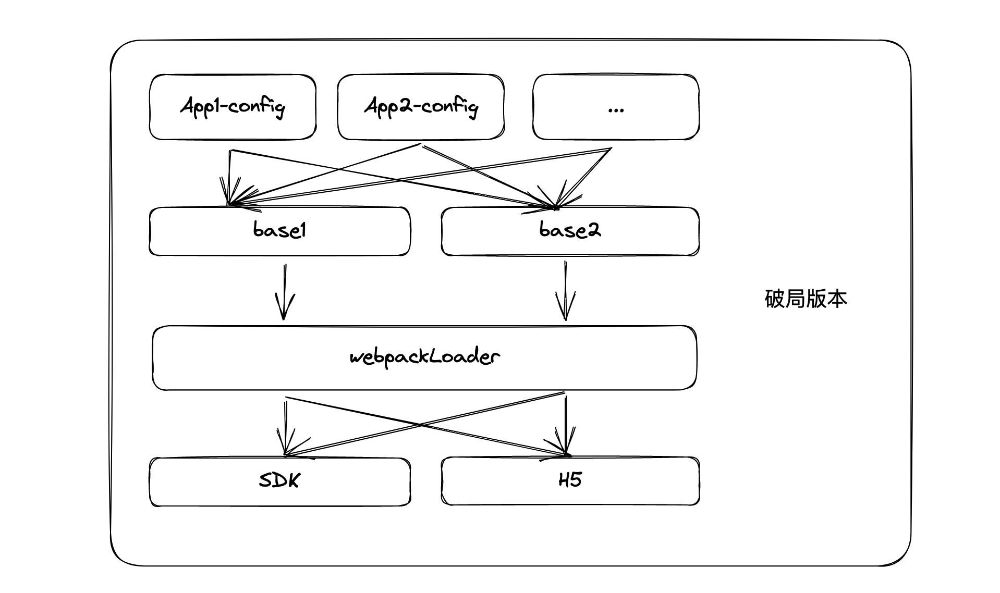

背景
进入公司之初遇见了一个项目， 需求是这样：存在多款不同的app应用， 但是每款应用都具有相同或较小差异的功能，每款应用是通过后台管理端进行配置皮肤样式&内容进行不同风格的展示，所以最后是通过本地代码+远程皮肤&内容文件共同组合成一款全新的应用。
初代
项目伊始，也就是我刚刚接触到项目的时候大家考虑到的是通过不同的文件夹来区分不同的应用，各自独立，各自维护，这种也是最行之有效所能形成的沙箱，自定义程度高，开发灵活，能够兼容应用之间参差不齐的需求。即初代架构转换为图形就是这么一个情况：
但这也同时存在一下几个问题
相同交互、布局的代码需要在多个应用重复实现，新增应用时需要将已有的代码进行CV，对git改动项有要求的项目将是一次‘灾难’。
每个应用都有自己的作用域，如果在一款应用中发现了通用问题则需要在多个应用中重复修改，多次切换项目容易造成漏改、少改的情况， 导致项目出现临界bug。
迭代
在经过1-2款游戏的迭代后，考虑将其架构升级，用于解决初代架构所面临的问题。这里主要是借助了代码实现中继承合并的相关概念将其抽象化，我们将已经实现了完整功能的应用作为基准版本base，然后让其他需要相同功能的应用通过自有应用配置文件做一次合并，配置文件中包含了应用的唯一标识（用于区分不同的皮肤&内容文件）以及一些应用自需的一些信息。通过这种方式，将基准版本抽离出来供其他应用待合并。转换为图形就是以下所示：
这种架构的实现看似对自定义需求较高的应用支持度不太友好，其实不是这样的，架构中的设计将文件类型分为了3种情况：
- 基准版本
- 应用定制版特定文件
- 应用定制版非特定文件
对于这3种文件类型， 这里也做了很多友好性的处理，比如哪些应用配置文件需要做合并处理？哪些文件里面的变量需要覆盖？哪些文件无需处理直接覆盖基准版本内的文件？等等这些都做了支持，在下面这张图中比较清晰的说明了这次的文件合并机制
如上图所示，上方的3种文件类型将会进行3种处理
- 基准版本直接复制。等待应用定制版文件进行替换
- 应用定制版特定文件进行内容合并。合并规则为变量替换或内容追加，然后替换掉复制后的基准版本文件即主包app中的文件
- 应用定制版非特定文件直接覆盖。不在特定文件列表中的文件将直接替换掉主包app中对应的文件
注意，这里的合并操作是同路径情况下的操作，文件路径（包括不限于文件夹层级、文件名称、文件后缀名）存在不一致的情况均当成应用定制版非特定文件。
至此其实已经完成了本次架构中最重要的文件合并机制了，但是此架构还缺失了一些灵活性：
- 待选择的基准版本有且只有一个，不利于多个相同逻辑产业线的扩展
- 此次应用为SDK项目(一个混合应用)，仍然需要开发对应的H5应用（当不能打开SDK项目时打开H5页面兜底）
破冰
在费了九牛二虎之力，经历了九九八十二难之后终于完成了这次灵活性较高， 能够支撑一套代码生成两端应用，支持多个基准版本选择的系统架构。在此项目架构中，由于SDK项目中很多语法是支持H5应用的，并且项目通过webpack编译打包，所以这里使用了webpack-loader进行H5应用的转换编译，达到一套代码两端应用的目的。最后架构转换为图形即为：

最后
首先感谢组织存在这么一次需求，给了我这次架构设计、搭建、开发的机会，在这个过程中也对AST、webpack等相关知识进行了运用和巩固，相信随着此架构的落地，开发效率将得到较大的提升。
当然目前架构仍然存在很多方面的优化，就此先做一下几点规划：
- 新建应用脚手架。通过不同的命令行输入生成应用定制版内容
- 接入流水线。通过新建应用脚手架配置流水线的使用达到CI/CD的目的
- 低代码平台。配合低代码平台生成不同的基准版本，结合流水线快速接入不同风格新游